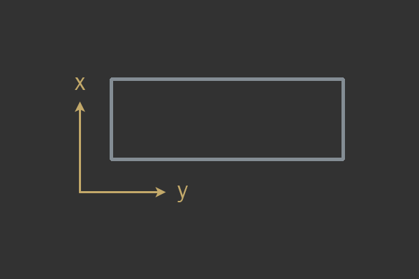
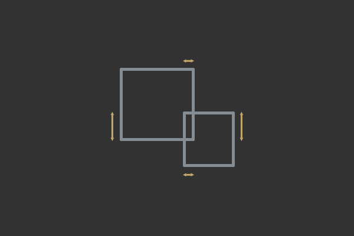

El motor físico se encarga de las colisiones y del movimiento
Es una librería que proporciona una simulación aproximada de un cierto sistema de física como cuerpos rígidos, cuerpos blandos, fluidos, colisiones, telas…
Se usa en videojuegos y simulación
En la mayoría de los juegos, la velocidad de ejecución es más importante que la precisión de la simulación
Por tanto se busca hacer aproximaciones
O mejor dicho: los motores físicos de Phaser
En Phaser hay tres motores físicos disponibles:
Pensado para tratar colisiones AABB (axis-aligned bounded rectangles): para manejar objetos sin rotaciones
Sólo se comprueba si existen colisiones (solapamiento o overlapping) entre dos rectángulos
Tiene problemas con las áreas transparentes
Está pensado para juegos sencillos
Matter.js admite rotaciones y formas más complejas (rampas)
Tiene más precisión, pero es más lento
Tiene un modelo de física mucho más avanzado, springs (muelles), polígonos, fuerzas, restricciones…
Angry Birds usaría este motor
La velocidad es una magnitud física vectorial que expresa la distancia recorrida de un objeto por unidad de tiempo
Si aplicamos una velocidad a un objeto físico este se moverá hacia la dirección indicada con la magnitud indicada
Una fuerza es todo agente capaz de modificar la cantidad de movimiento de un objeto
Se aplica la segunda Ley de Newton:
\[F = m \times a\]
Una fuerza aplicada de manera puntual (en un instante de tiempo) se la suele conocer como impulso.
Cuando dos bounding boxes están solapados
Un bounding box es una caja que representa el objeto (lo simplifica). El tamaño por defecto del bounding box de Phaser es el tamaño del sprite

Figura 1: Bounding box

Figura 2: Overlapping entre bounding boxes
Las colisiones más sencillas son colisiones AABB que se pueden calcular de la siguiente manera:
function AABBvsAABB(a, b) {
if(a.max.x < b.min.x || a.min.x > b.max.x)
return false;
else if(a.max.y < b.min.y || a.min.y > b.max.y)
return false;
else
return true
}
Son objetos invisibles que detectan colisiones. Dependiendo del motor, solo detectan la colisión inicial o pueden detectar mientras estamos colisionando o al salir de la colisión.
Phaser hace todos estos cálculos por nosotros
Para iniciar el motor de fisica añadimos una propiedad physics con la
configuración
del motor en Arcade:
const config = {
// ...
physics: {
default: 'arcade', // elegir motor
arcade: { // propiedades del motor
gravity: { y: 300 },
debug: false // true para ver info
}
},
// ...
};
const game = new Phaser.Game(config);
// `this` es una `Scene`
this.player = this.add.sprite(100, 200, 'dude');
this.physics.add.existing(this);
o
this.player = this.physics.add.sprite(100, 450, 'dude');
Esto hace que el Sprite tenga la propiedad
body
de Arcade
// `this` es un `Sprite` con físicas
this.body.setCollideWorldBounds();
Atención a la propiedad body aquí
Para saber si colisionamos con cualquier suelo:
this.body.onFloor()
Muy útil para no saltar infinitamente
Podemos rebotar al colisionar con elementos del mundo:
this.body.setBounce(1,1);
Podemos hacer que las colisiones no muevan un objeto con:
this.body.setImmovable(true);
El objeto se puede mover, pero las colisiones no lo "empujarán"
Para hacer que un objeto se mueva en una determinada dirección:
this.body.setVelocity(1,0);
Se verá afectado por otras fuerzas, en particular, por la gravedad
Los Group se usan para manejar grupos de colisiones (entre otras cosas)
Una entidad creada por un grupo físico tendrá física
// `this` es una escena
this.platforms = this.physics.add.group();
Atención a la propiedad physics aquí
Los grupos creados con physics.add.group() son dinámicos
Los grupos creados con physics.add.staticGroup() son estáticos
(entidades que no se mueven, pero que tienen colisión)
Creamos sprites usando el método
create():
// preload
this.load.image('platform', 'platform.png');
// create
this.platforms = this.physics.add.staticGroup();
this.platforms.create(500, 150, 'platform');
this.platforms.create(-200, 300, 'platform');
this.platforms.create(400, 450, 'platform');
O podemos añadir nuestros propios GameObjects con add() y
addMultiple()
Para activar la detección de colisiones hay que crear un
collider:
this.physics.add.collider(player, group);
Si queremos que nos avisen si se produce una colisión hay que incluir un callback:
// create
this.physics.add.collider(player, group, onCollision);
// el método recibe dos parámetros, son los objetos que han colisionado
function onCollision(obj1, obj2) {
// hacer algo
}
O con una función anónima (recordad el comportamiento del this):
// create
this.physics.add.collider(player, group, (o1, o2) => {
// hacer algo
});
collide() (¡no add.collider()!) devuelve un booleano que indica si
ha habido colisión:
// en update, donde this es una Scene
if(this.physics.collide(this.player, this.platform)) {
console.log("Hay colisión");
}
Muchas veces queremos saber si hay solapamiento, pero sin que haya efectos físicos
Para estos casos, usamos
overlap
donde usábamos collider
// create
this.physics.add.overlap(player, group, (o1, o2) => {
// o1 y o2 se están tocando
});
// en update donde this es una Scene
if(this.physics.overlap(this.player, this.platform)) {
textInfo.text = "Hay solape";
}
Se pueden crear con add.zone(), de la escena, y luego lo añadimos a
las físicas:
// x, y, width, height
let trigger = this.add.zone(300, 200, 200, 200);
// Añade un body
this.physics.world.enable(trigger);
trigger.body.setAllowGravity(false);
trigger.body.setImmovable(false);